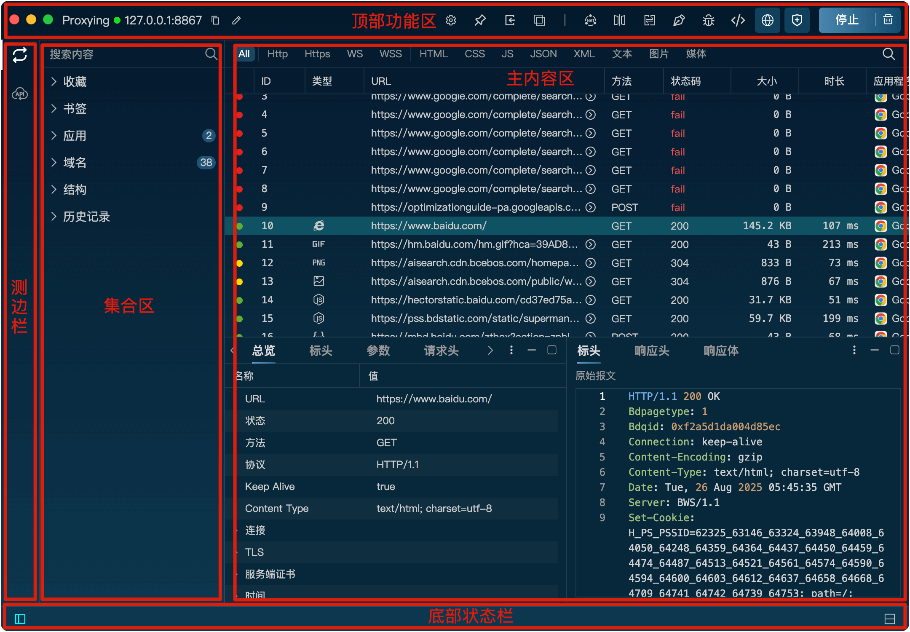

1、顶部功能区主要包含了所有代理设置相关的功能按钮，包括网关、镜像、映射、重写、脚本、断点功能的启停以及规则编辑。另外还包括置顶按钮、对比工具按钮、SSL证书安装按钮、代理启停按钮。
2、侧边栏用来切换不同的功能界面（请求代理/请求模拟）。
3、集合区用来统计当前捕获的请求，包括域名、URL的树状结构。另外添加的请求书签和收藏以及历史记录都在这里展示。
4、主内容区展示了当前捕获的所有请求，双击请求可以查看请求的详细信息。
5、底部状态栏左边包含了集合的开启/关闭按钮，右边按钮用来切换布局方式（横向/垂直）。